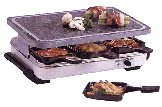
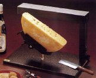

RacletteRaclette is a staple of wintertime in Switzerland. If you ask most people which they prefer, fondue or raclette, most will reply raclette. Don't ask me why — I've never understood it. I'm a fondue monster myself, which is not to say that I don't enjoy a good raclette every now and then. For those of you who haven't a clue, perhaps I'd better explain what it is. Raclette is essentially melted cheese, served over boiled potatoes with lots of ground black pepper, accompanied by small pickled onions and gherkins. The name comes from the French verb "racler", to scrape, because of the way the melted cheese is scraped off the block. Like everything with a strong tradition, there are lots of very strict dos and don'ts, which don't actually matter that much. After you've had it a couple of times you'll get to know what you like and what you don't. This is not so much a recipe as a description, because there's really nothing to it. Although, having said that, if you don't have the right equipment or ingredients, I'm afraid I can't be held responsible for the consequences. You'll need a raclette machine of some description. They come in approximately two varieties which are impossible to describe, so here's a couple of pictures, courtesy of www.widerview.com who sell the things in the US. | |
|  |  |
|
Once you have one of those, and the following ingredients, just invite some friends round and you're all set. Time: whatever it takes to cook the potatoes, plus as long as you want.
And to finish off, here's the last word on "Real Raclette", taken from Sue Style's book A Taste of Switzerland: "Light a good fire. Buy yourself a half wheel of real Raclette cheese, preferably from the Valais (Gomser, Bagnes, Orsières etc.), between three and five months old. Scrape off the rind, top and bottom, so that the cheese can melt more easily. Prepare boiled potatoes in their skins and have ready a supply of gherkins or cornichons, pickled onions and black pepper. When the fire has died to a mass of glowing embers, procure yourself a large stone and put it before the fire. Set the half cheese on top, its cut surface exposed to the heat. Nearby have a supply of plates. As the cheese melts, scrape it off on to a plate and serve at once. Continue in this way until everyone is full." |
|
|
|
|